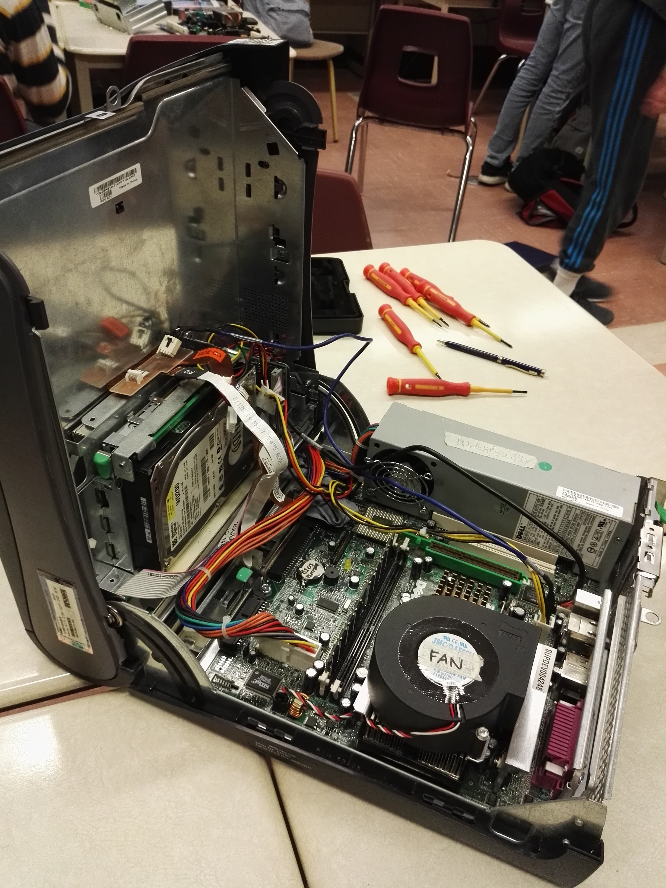
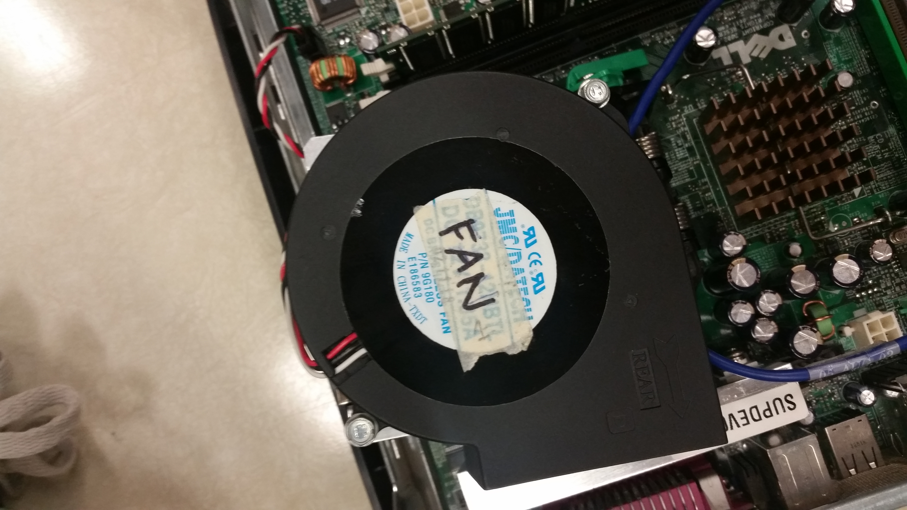
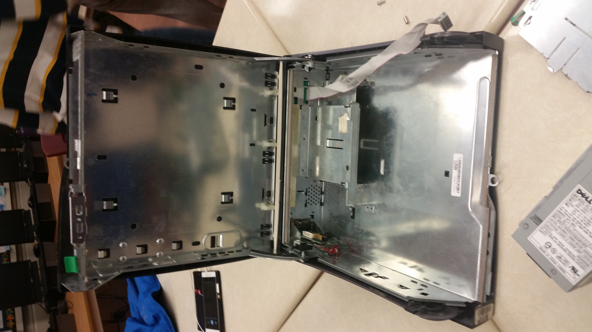

Procedure
Table of Contents
- Step 1 : Cracking the Case (System Unit)
- Step 2 : Removing the Power supply Unit
- Step 3 : Pull the Cooling Fan out
- Step 4 : Extracting the CPU
- Step 5 : Detach the BIOS/ROM
- Step 6 : Examining the RAM
- Step 7 : Eject the Disk Drives
- Step 8 : Lift the Motherboard out
- Step 9 : Rip out the Hard disk drive
- Step X : Graphics and Audio
Step 1 : Cracking the Case (System Unit)
Definition
We took off the case first, uncovering the computer's internal hardware.
Step 2 : Removing the Power supply Unit
Definition
Next, we removed the power supply, as it was the most accessible part of the unit to remove.

Step 3 : Pull the Cooling Fan out
Definition
We then pulled the cooling fan out, revealing the CPU underneath it.

Step 4 : Extracting the CPU
Definition
After removing the fan that was covering the CPU, we carefully extracted the CPU (a.k.a. Central Processing Unit)
Step 5 : Detach the BIOS/ROM
Definition
The BIOS stored inside a ROM chip was the next to be removed from the main unit.
Step 6 : Examining the RAM
Definition
Right after removing the ROM chip, we took the RAM out of the unit as well.


Step 7 : Eject the Disk Drives
Definition
Now, we pressed on the green snap-on/snap-off clips to remove both the floppy disk drive and the CD-ROM drive.

Step 8 : Lift the Motherboard out
Definition
With all the important parts of the computer removed that were located on the motherboard, we decided to lift the motherboard out of the base of the unit.

Step 9 : "Rip out" the Hard disk drive
Definition
Finally, we took out the hard disk drive which proved to be a challege because it was covered with layers of metal and the angle at which we needed to pull the hard drive out of the case was right against the side of the unit.


Step X : Graphics and Audio
Definition
There were probably also graphics/video and audio cards located somewhere inside the unit which we could not find.
Finish!
Pictures of our completed disassembling of the computer unit:
